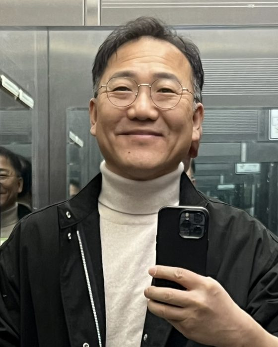

SCIENTOMETRICS
과학기술 논문성과 분석
KISTEP과 함께 국가 R&D의 논문 산출과 영향력을 매년 정량 분석합니다. 인용·협력·분야 구조를 데이터로 읽어 과학정책의 근거를 만듭니다.
우리는 개별 연구실에 잠들어 있던 데이터를 수집·기술(記述)·공유·재사용의 흐름으로 잇고, 그 위에서 과학의 성과를 계량하고 과학 그 자체를 연구합니다. 메타데이터와 국제표준, 리포지토리 인증, 그리고 과학계량과 메타사이언스(Meta Science)가 한자리에서 만나는 융복합 연구의 거점입니다.
전북대학교 부설 연구데이터융복합연구소는 연구 현장에서 생산되는 방대한 데이터가 한 번 쓰이고 버려지지 않도록, 데이터의 수집–기술–관리–공유–재사용 전 주기를 설계하는 전문 연구조직입니다. 우리는 데이터를 단순한 부산물이 아니라, 검증 가능하고 다시 쓰일 수 있는 학술 자산으로 다룹니다.
연구소는 농업·산림·생태·해양·소재·지질 등 다양한 도메인의 국가기관과 함께 메타데이터 스키마와 데이터관리계획(DMP)을 설계해 왔으며, TTA·ISNI 같은 국내외 표준화와 CoreTrustSeal 리포지토리 국제인증 획득을 지원해 왔습니다. 각기 다른 언어로 기록되던 데이터를 서로 통하게 만드는 일이 우리의 오랜 과제였습니다.
동시에 우리는 한국과학기술기획평가원(KISTEP)과 함께 과학기술 논문성과를 계량적으로 분석하고, 여기서 한 걸음 더 나아가 '과학을 연구하는 과학', 즉 메타사이언스(Meta Science)의 방법으로 연구 생태계 자체의 구조와 동향을 읽어냅니다. 데이터 인프라와 과학정책 분석이 한 지붕 아래 결합된 것이 이 연구소의 가장 큰 특징입니다.
KISTEP과 함께 국가 R&D의 논문 산출과 영향력을 매년 정량 분석합니다. 인용·협력·분야 구조를 데이터로 읽어 과학정책의 근거를 만듭니다.
연구데이터 저장소가 신뢰받을 수 있도록 CoreTrustSeal(CTS) 인증 요건을 분석하고 획득 전략을 수립합니다. 국내 기관의 해외 인증을 실제로 이끌었습니다.
목재·생태·해양·농업 등 도메인별 메타데이터 스키마와 maDMP를 설계하고 TTA 표준 제정, ISNI 기반 식별체계 구축을 지원합니다.
과학의 생산 방식 자체를 분석 대상으로 삼아 한·일 공동연구 분석, 중국 휴머노이드 로봇 R&D 동향 등 연구 생태계의 지형을 데이터로 그려냅니다.

연구의 진정한 가치는 그 결과가 공유되고, 다시 쓰이며, 더 큰 발견으로 이어질 때 비로소 완성됩니다.
전북대학교 부설 연구데이터융복합연구소 홈페이지를 찾아 주신 여러분을 진심으로 환영합니다. 우리는 지금 데이터가 곧 지식이자 자산이 되는 시대, 그리고 그 데이터를 학습하여 인공지능이 스스로 통찰을 만들어 내는 AI 시대를 살아가고 있습니다. 오늘날 모든 과학적 발견의 출발점이자 인공지능의 연료가 되는 것은, 다름 아닌 잘 정리된 연구데이터입니다.
그러나 아무리 귀중한 데이터라도 체계적으로 수집·저장·관리·보존되지 않으면 이내 흩어지고 사라집니다. 연구데이터가 한 번의 실험으로 소멸하지 않고 다음 세대의 연구로 이어지려면, 데이터를 안전하게 담아 두고 필요할 때 다시 꺼내어 재사용할 수 있게 하는 데이터 리포지터리(Data Repository)가 반드시 필요합니다. 리포지터리는 단순한 저장 공간이 아니라, 데이터의 신뢰성과 재현성, 그리고 장기적 활용 가능성을 지켜 내는 학술 인프라의 심장입니다.
나아가 이러한 리포지터리가 세계적으로 신뢰받기 위해서는 CoreTrustSeal과 같은 국제인증이 뒷받침되어야 합니다. 국제인증은 데이터가 찾을 수 있고(Findable)·접근 가능하며(Accessible)·상호운용되고(Interoperable)·재사용 가능한(Reusable) 이른바 FAIR 원칙에 따라 관리되고 있음을 국제사회에 보증하는 약속입니다. 인증받은 리포지터리를 통해 우리의 연구데이터는 국경을 넘어 신뢰받고, FAIR 데이터의 확산에 실질적으로 기여하게 됩니다.
이 모든 노력은 결국 오픈사이언스(Open Science)라는 큰 흐름으로 모입니다. 지식의 문턱을 낮추는 오픈액세스(Open Access), 데이터를 모두의 자산으로 개방하는 오픈데이터(Open Data) 운동은 연구의 투명성과 협력을 높이고, 인류가 함께 직면한 난제를 풀어 가는 든든한 토대가 됩니다. 우리 연구소는 데이터 관리와 표준화, 리포지터리 국제인증, 그리고 과학계량과 메타사이언스 연구를 통해 바로 이 개방과 공유의 생태계를 만드는 일에 매진하고 있습니다.
연구데이터융복합연구소는 데이터가 지식이 되고, 그 지식이 다시 모두의 것이 되는 선순환을 실현하기 위해 끊임없이 연구하고 협력하겠습니다. 여러분의 따뜻한 관심과 성원을 부탁드립니다. 감사합니다.
2019년부터 오늘까지, 연구소가 수행해 온 32건의 수탁 연구과제를 시간의 흐름으로 정리했습니다. 아래 연도 칩으로 특정 해의 사업만 추려 볼 수 있으며, 각 과제는 다섯 개의 연구 영역으로 분류되어 있습니다.
연구소의 연구는 크게 다섯 갈래로 뻗어 있습니다. 아래 네 개의 데이터·표준 축이 연구의 토대를 이루고, 그 위에서 다섯 번째 축인 메타사이언스가 과학 그 자체를 탐구합니다.
연구 전 주기에 걸친 데이터관리계획(DMP)과 관리체계를 설계하고, 소재·농업·지질 데이터의 품질관리·평가체계를 구축합니다.
도메인 메타데이터 스키마를 도출하고 maDMP를 제안하며, TTA·ISNI 등 국내외 표준으로 데이터의 상호운용성을 확보합니다.
CoreTrustSeal 인증 요건을 분석하고 저장소 구축·운영과 해외 인증 획득 전략을 수립하여 신뢰받는 데이터 저장소를 만듭니다.
논문·인용·협력 네트워크를 정량 분석해 국가 R&D의 성과 구조와 기술 트렌드를 읽고 과학정책의 근거를 제공합니다.
한국과학기술기획평가원(KISTEP)과 함께 수행하는 과학기술 논문성과 분석 연구는 연구소의 대표 정기 과제입니다. 2022년 이후 매년 이어지며, 국가 연구개발 투자가 실제 학술 성과로 얼마나, 그리고 어떤 구조로 이어지는지를 정량적으로 규명합니다.
분석은 단순한 편수 집계에 그치지 않습니다. 분야별 논문 산출과 피인용 영향력, 국제·국내 공동연구 네트워크, 상위 인용 논문의 주제 지형, 그리고 주요 경쟁국과의 상대적 위치를 다층적으로 진단합니다. 매년 분석 대상 기간을 갱신(예: 2008–2022 → 2011–2025)하며 시계열적 흐름을 축적해 왔습니다.
그 결과는 국가 R&D 정책 방향을 설정하고 투자 포트폴리오를 조정하는 데 근거 자료로 활용됩니다. 데이터로 과학의 성과를 읽어 정책의 언어로 옮기는 일—메타사이언스의 가장 실천적인 형태입니다.
한국과 일본은 지리적으로 가깝고 연구 역량이 성숙한 이웃이지만, 양국 연구자의 공동연구가 실제로 어느 분야에서, 얼마나 긴밀하게 이루어지는가는 그동안 충분히 규명되지 못했습니다. 연구소는 서지·인용 데이터를 기반으로 한·일 협력의 실체를 계량적으로 분석합니다.
공저 논문의 추이와 분야별 분포, 협력을 매개하는 핵심 기관과 연구자, 공동연구가 만들어 내는 인용 영향력의 프리미엄, 그리고 제3국을 포함한 다자 협력 구조까지—양국 관계를 하나의 협력 네트워크로 조망합니다.
이 분석은 향후 한·일 과학기술 협력의 유망 분야를 식별하고, 정부·대학 차원의 국제 공동연구 전략을 설계하는 데 실증적 토대를 제공합니다.
휴머노이드 로봇은 인공지능·구동·소재·제어 기술이 집약된 차세대 산업의 각축장이며, 그 흐름을 가장 공격적으로 밀어붙이는 국가 중 하나가 중국입니다. 연구소는 중국의 휴머노이드 로봇 연구개발 동향을 논문·특허·정책 데이터로 추적합니다.
중국의 연구 논문과 특허 출원의 급증세, 이를 이끄는 대학·기업·국가연구기관의 지형, 정부 육성 정책과 자금 흐름, 그리고 핵심 부품·기술의 성숙도를 다각도로 분석합니다. 나아가 한국을 비롯한 주요국과의 기술 격차와 협력·경쟁 구도를 함께 조망합니다.
이는 급변하는 첨단 로봇 산업에서 우리 R&D가 어디에 집중해야 하는지, 어떤 파트너십과 대응 전략이 필요한지를 판단하는 선제적 기술 인텔리전스로 기능합니다.
연구소는 전북대학교 인문대학 2호관에 자리하고 있습니다. 연구실과 회의실이 같은 층에 있어, 방문·회의 모두 편리하게 이용하실 수 있습니다.
방문 전 사전 연락을 주시면 더욱 원활하게 안내해 드립니다.